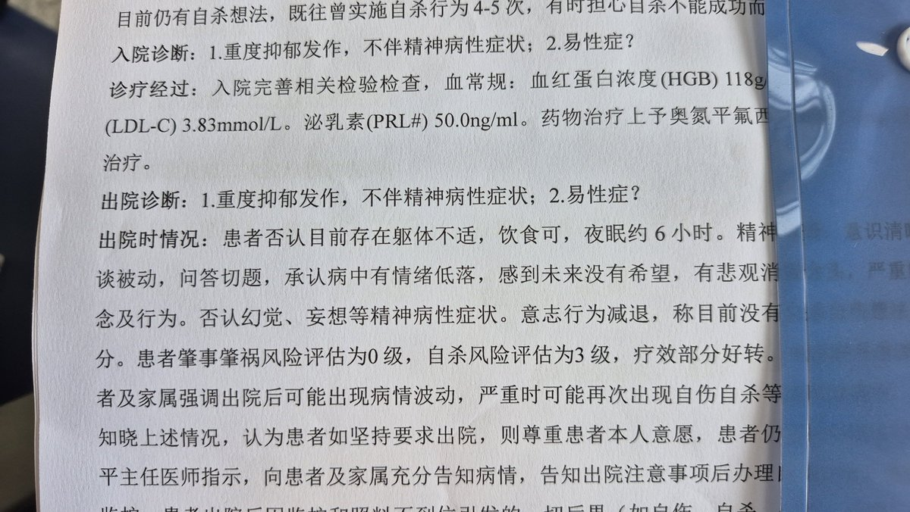

伊芙🍥
@yifu0753
关于一些个人所称我的精神状态导致我可能对事件和事实进行编造，现在在此进行说明：我确实患有会影响情绪的精神障碍，但经医疗机构诊断不具有精神病性症状，不会影响我的认知或感知。

🌈 Cic17
@CicadaSeventeen
我是伊芙的前对象，在事发后当天只有oau和明觉（由于bys群的关系）介入，当事人被拘留与此有一定关系，但与晨曦、牧鸢基本无关。她说的威胁基本属子虚乌有
尽管由于我不在场无证据，但猥亵非常可能属实。然而伊芙对事情，尤其对事后介入的各方进行了很多编造。她的精神状态有目共睹。请大家谨慎判断 https://t.co/I8jtdegeoz